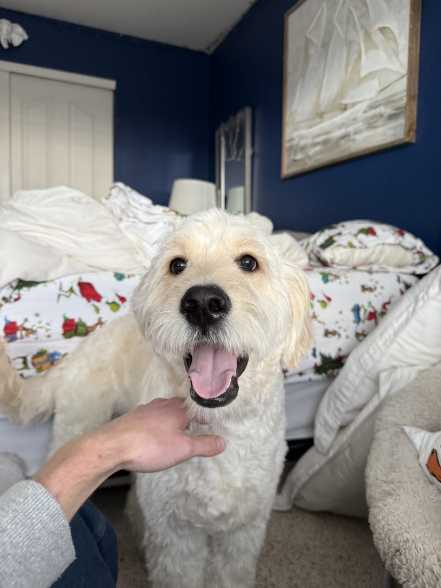
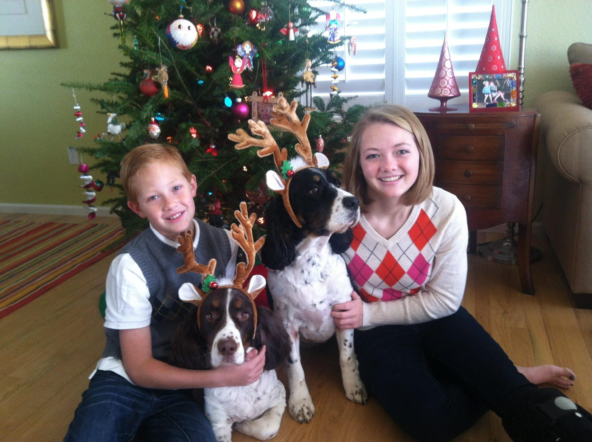
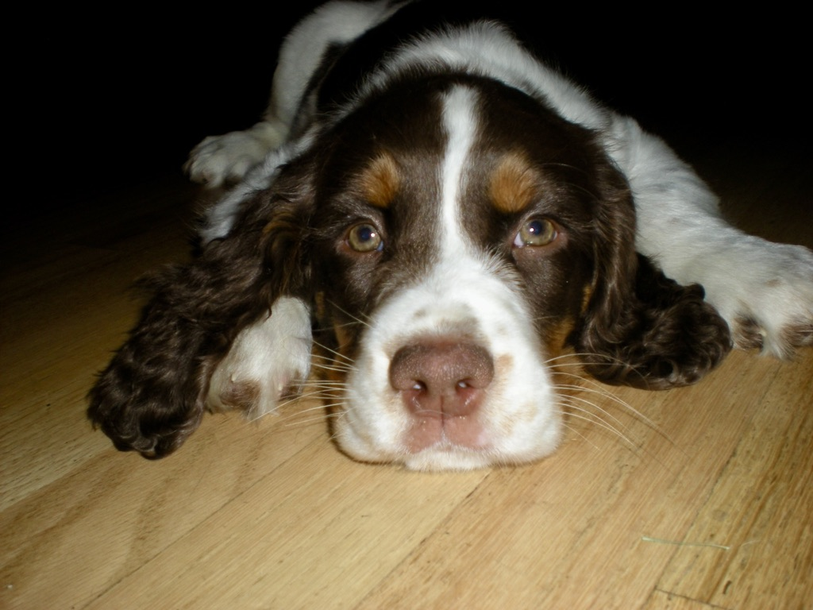
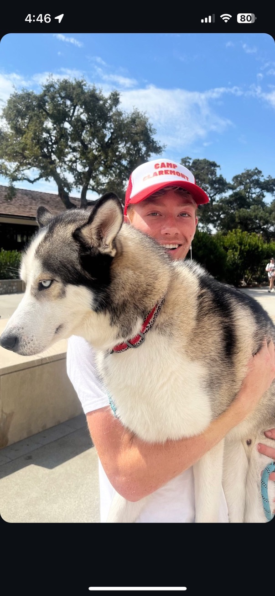
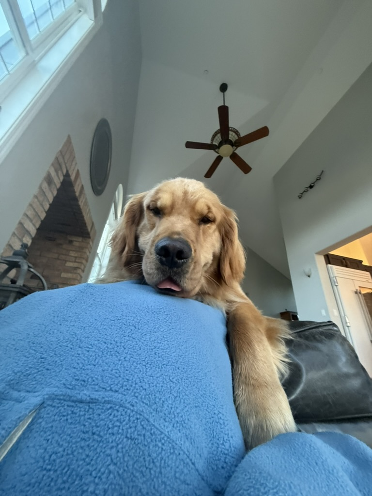
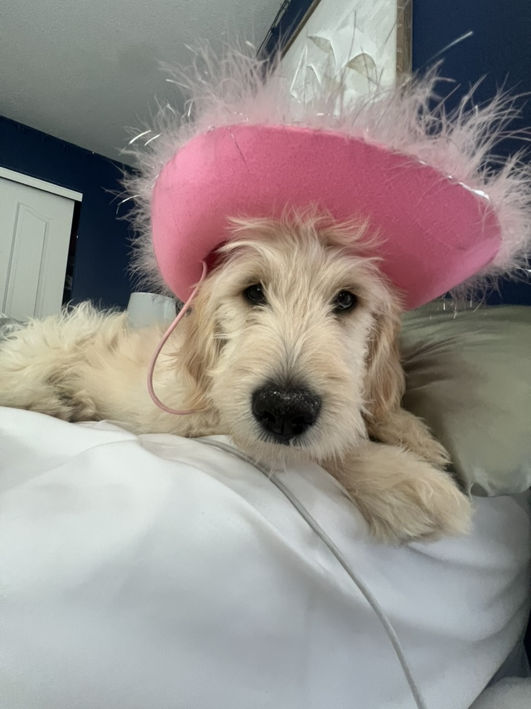

Dogs

Dogs are genuinely one of my favorite things in the world. I grew up with them and I don't think I'll ever not have one.
My family has always been a dog family. We've had Springer Spaniels for as long as I can remember, and we recently got a Goldendoodle named Jameson — who goes by Jameo.
Below is the full rundown of the dogs we've had and some of my favorite photos.
Past Dogs: Springer Spaniels
We had Springer Spaniels growing up and they were incredible dogs. Smart, loyal, and always excited about everything. The kind of dog that makes every day better just by being in the room.
These are some of the old photos from when we had them — including a classic Christmas photo that I love.




Current Dog: Jameson (Jameo)
Jameo is our Goldendoodle and he is completely unhinged in the best way. His full name is Jameson but we call him Jameo. He's fluffy, white, and obsessed with attention.
He's still fairly young and has a lot of energy. The pink cowboy hat photo pretty much sums up his personality — goofy and totally comfortable being ridiculous.

Dog Rankings
- English Springer Spaniel — our family breed, the best
- Goldendoodle — fluffy and friendly (hi Jameo)
- Golden Retriever — classic for a reason
- Husky — beautiful and dramatic
| Breed | Vibe | My Rating |
|---|---|---|
| Springer Spaniel | Loyal, energetic, smart | 10/10 |
| Goldendoodle (Jameo) | Fluffy chaos gremlin | 10/10 |
| Golden Retriever | Pure goodness | 10/10 |